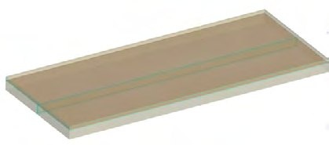
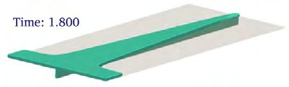

Computational fluid dynamics modelling of vacuum-assisted resin infusion in composite sandwich panels during wind turbine blade manufacturing
21st European Conference on Composite Materials, 3, 281–288 (2024)
Abstract
The manufacturing of wind turbine blades predominantly features composite sandwich panels made through the Vacuum-Assisted Resin Infusion (VARI) process. These sandwich regions involve multiple components, which include a lightweight balsa or foam core with grooves and channels encased in noncrimp glass-fibre fabric skins. Understanding resin flow behaviour and infusion time through these materials is difficult as there are a large number of parameters to consider. Therefore, this study focuses on developing a Computational Fluid Dynamics (CFD) model to provide a more accurate prediction of resin flow for the investigation of a wide range of parametric changes. The CFD model is initially developed to simulate resin flow through the lower reinforcement layers and shallow grooves of composite sandwich panels. The simulated flow front has been compared with the experimental ones captured at the top and bottom of the fabric at different infusion times. The experimental and simulated results agree relatively well; providing a new venue for investigating resin infusion performance through complex features of the layup. Furthermore, the model has been exploited to investigate the influence of groove spacing on the flow front, resin-filled volume, and infusion time.
Figures from this paper


Citation
@inproceedings{computational_fluid_dynamics_modelling_of_vacuum_assisted_resin_infusion_in,
title = {Computational fluid dynamics modelling of vacuum-assisted resin infusion in composite sandwich panels during wind turbine blade manufacturing},
author = {M.T. Mollah, M. Larionov, R.S. Pierce, J. Spangenberg},
booktitle = {21st European Conference on Composite Materials, 3, 281–288},
year = {2024},
doi = {https://doi.org/10.60691/yj56-np80}
}